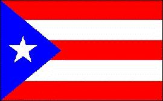
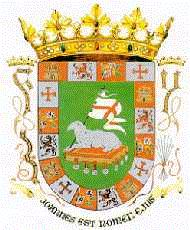

Puerto Rico
|  |  |
Información General
Nombre oficial: Estado libre asociado de Puerto Rico.
Área: 8897 km².
Costas: 704 km.
División política:78 municipios
Unidad monetaria: Dólar de Estados Unidos
1 Dólar de EEUU = 100 centavos.
Idiomas: Español e inglés (oficiales).
Fiesta nacional: 4 de julio, Día de la Independencia de EE.UU.
Gentilicio: Puertorriqueño.
Hora oficial: GMT -4 horas (normal/verano).
Curiosidades
Al norte y al sur de la isla de Puerto Rico se encuentran dos profundidades marinas: La Fosa de Puerto Rico (8 648 m de profundidad) y la de Tammer (500 m).
San Juán de Puerto Rico posee algunos de los fuertes coloniales mas importantes de América, entre ellos el de San Felipe del Morro (construido en 1591), el de San Cristobal (completado en 1772) y la Fortaleza (construido de 1538 a 1540).
Información adicional en Internet.
Perfil Ecónomico
Perfil Demográfico
Población: 3.957.988 hab.
Densidad de población: 435 hab/km²
Puerto Rico es una de las islas mas densamente pobladas del Caribe
Perfil Cultural
Alfabetismo: 89,1%.
Religión:
- Católicos: 89,8%
- Protestantes: 4,0%
- No religiosos: 2,3%
- Otros: 3,0%.
Algunas figuras notables:
- José Gautier Benítez (1846-1880). Poeta
- Eugenio M. de Hostos (1839-1903). Educador y escritor
- Enrique A. Laguerre (1906). Novelista
- Juan Morell Campos (1857-1896). Compositor
- Rita Moreno (1931). Actriz
- Luis Muñoz Rivera (1859-1916). Político y escritor
- Francisco Oller (1833-1917). Pintor
- Evaristo Ribera (1896-1976). Poeta
- Lola Rodríguez (1843). Poeta
- Alejandro Tapia (1826-1882). Poeta, dramaturgo, novelista y ensayista
Lugares declarados patrimonio mundial por la UNESCO
- Puerto Rico (fortaleza y sitio histórico de San Juan).
Sistema de Gobierno
Constitución vigente: Las relaciones entre Puerto Rico y Estados Unidos están reguladas por la Ley Pública No. 600 del Congreso Federal. La Constitución del Estado Libre Asociado, aprobada por plebiscito el 3 de marzo de 1952 y ratificada por el Congreso Federal el 3 de julio de 1952, entró en vigor el 25 de julio de 1952. La autonomía del Estado sólo está limitada en los aspectos de la defensa nacional, acuñación de moneda, relaciones exteriores y administración de los servicios de correos y aduanas.
Sistema ejecutivo: Gobernador (elegido directamente para un término de cuatro años), y el Gabinete (diecisiete secretarios). El Secretario de Estado reemplaza al Gobernador..
Sistema legislativo: Senado (veintisiete miembros); Cámara de Representantes (cincuenta y tres miembros). Senadores y representantes elegidos por cuatro años. Hay un Comisionado residente, con voz, pero sin voto, en el Congreso de Washington, D.C..
Sistema judicial: Tribunal Supremo (siete magistrados), Tribunal de Circuito de Apelaciones, Tribunal de primera instancia y Tribunal de Distrito (éste una subsección del anterior). El Presidente de Estados Unidos nombra dos jueces distritales y un Procurador que representan al gobierno federal. Las apelaciones pueden llevarse a la Corte Suprema de Estados Unidos.
Gobierno subdivisional: Setenta y ocho municipios, con alcaldes y asambleístas elegidos para un período de cuatro años.
Aproximación histórica
La isla de Puerto Rico es la más pequeña y oriental de las Antillas Mayores. Denominada Borinquen por sus habitantes nativos, fue descubierta por Colón en su segundo viaje en 1493.
En el 1898, como resultado de la Guerra entre España y Estados Unidos de Norteamérica la isla es ocupada por este último país. En 1952 se transforma en Estado Libre Asociado de los Estados Unidos de Norteamérica, celebrándose plebiscitos en 1967 y 1991 que apoyaron el mantenimiento de este status. Este último volvió a colocar el inglés, como lengua oficial, junto al español.
La isla presenta una llanura litoral baja, con mesetas en el interior atravesadas por cordones montañosos. La cordillera Central recorre la isla de este a oeste y su punto mas elevado es el cerro de la Punta con 1341 metros de altitud.
Económicamente Puerto Rico es la isla más próspera dentro del conjunto de las Antillas Mayores. Dentro de las actividades primarias se destacan la agricultura y la ganadería, en particular la vacuna especializada en la producción de carne y leche.
Posee industria textil, de calzado, equipos eléctricos, productos químicos y farmacéuticos. El turismo con gran afluencia de norteamericanos es también un aspecto importante de su economía.
«-- ir al comienzo
«-- regresar